Interfaz y Paneles Principales
Explorador Interactivo
Haz clic en las zonas de la imagen
Guía de Referencia Interna
Las capas no se crean desde el panel de Contents. Para crear una capa nueva, debes usar el panel de Catalog (a la derecha).
En el panel Catalog, expande Databases, haz clic derecho en tu .gdb y selecciona New > Feature Class.
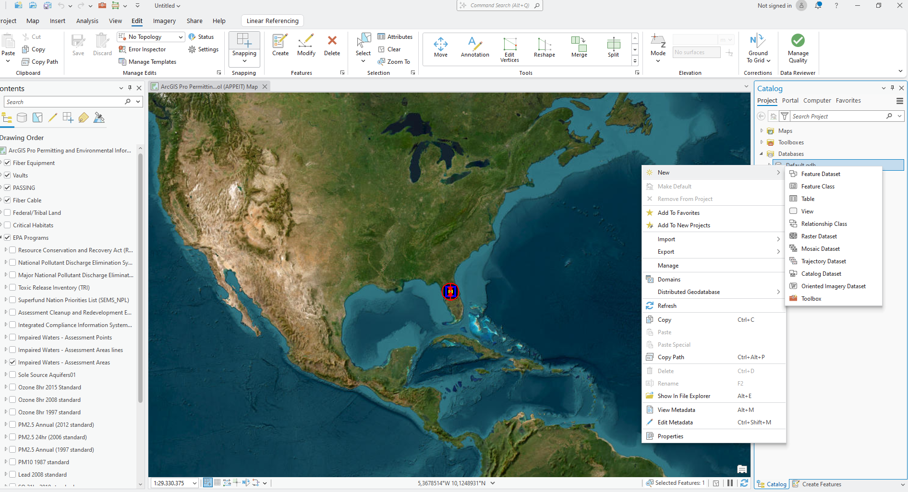
Establece el Name (sin espacios) y el Alias. Selecciona el tipo de geometría (Punto, Línea o Polígono).
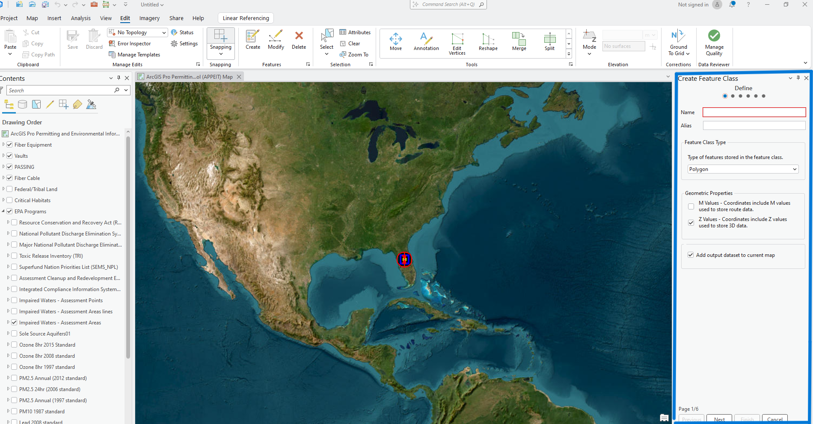
Define las columnas de tu base de datos. Agrega campos como "Estado", "Material" o "Fecha".
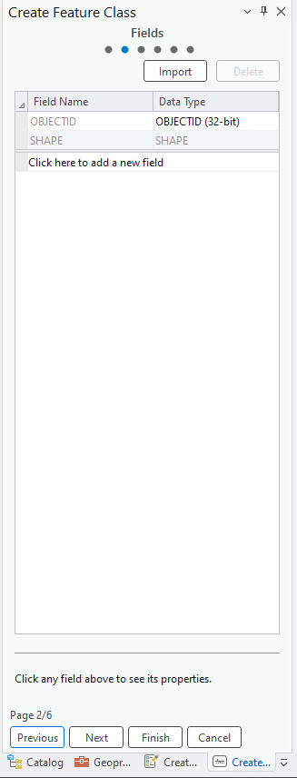
Busca y selecciona el sistema de coordenadas oficial para garantizar la precisión geográfica.

Flujo de trabajo estándar para la creación de elementos geográficos.
Para comenzar a dibujar, primero debemos localizar las herramientas en la cinta superior. A diferencia de otros softwares, aquí la edición está integrada en el flujo constante.
Dirígete a la pestaña Edit y busca el grupo Features.

Al presionar el botón Create, aparecerá un panel a la derecha. Este panel muestra todas las capas editables de tu mapa.
Selecciona la capa en la que deseas trabajar para ver sus herramientas de dibujo.
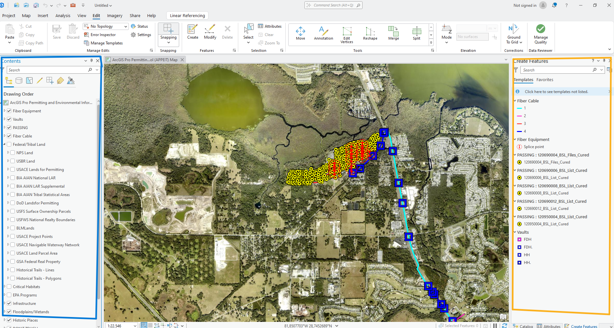
Una vez seleccionada la capa, aparecerá una barra flotante en el mapa o debajo del panel de creación con métodos de dibujo específicos.
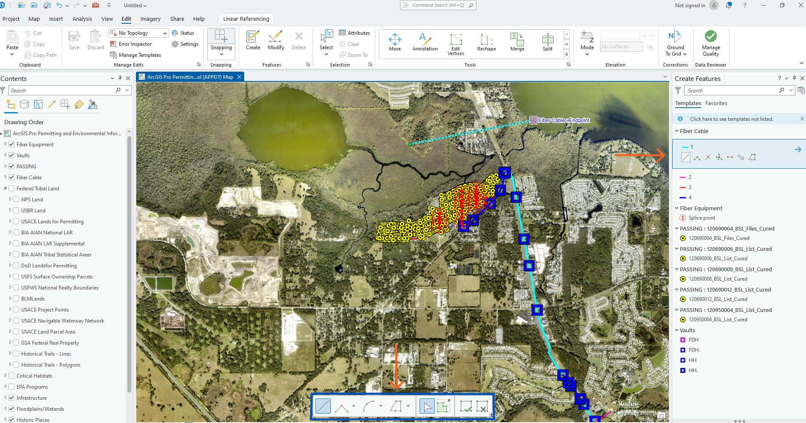
Para asegurar la conectividad entre cables y postes, el Snapping debe estar activo. Esto hace que el puntero se "pegue" a los elementos existentes.
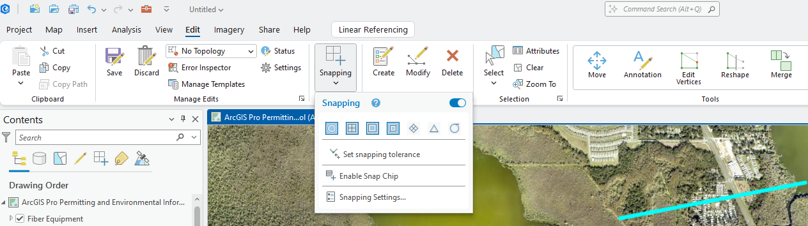
Al terminar de dibujar, es obligatorio presionar el botón Save del grupo Manage Edits. Si guardas el proyecto (.aprx) pero no guardas la edición de las capas, los dibujos se perderán.
Aprende a usar la herramienta para convertir tu base de datos en archivos Shape (.shp).
Vista de Mapa Activa
¡Éxito!
Al finalizar el proceso, un "Shapefile" se compone de varias extensiones que deben permanecer juntas:
Pro-tip: Comprime todos estos archivos en un único archivo .ZIP para compartirlos.
Los dominios evitan errores de escritura manual, forzando al usuario a seleccionar valores de una lista predefinida por la empresa.
Para configurar o ver los dominios asociados a una capa específica:
![[Imagen: Menú Contextual de Capa]](assets/img/Dominio01.png)
![[Imagen: Detalle de la Ventana de Dominios]](assets/img/dominio02.png)
Insertar Captura de Ventana de Dominios
Muestra la relación entre el nombre del dominio a la izquierda y sus códigos/descripciones a la derecha.
1. Configuración
Crea el nombre del dominio y define los códigos (valor real) y descripciones (lo que ve el usuario).
2. Asignación
Ve a Data Design > Fields y en la columna "Domain" selecciona la lista que acabas de crear.
Recuerda siempre presionar el botón Save en la parte superior después de realizar cambios en los dominios o campos.
Cada elemento dibujado en el mapa (punto, línea o polígono) tiene una fila correspondiente en la base de datos donde se almacena su información.
¿Cómo abrir la tabla?
Clic derecho sobre la capa en el panel Contents > Attribute Table (o presiona Ctrl + T).
![[Imagen de la Tabla de Atributos]](assets/img/Atributos01.png)
Referencia visual de Atributos
Una vez terminado de configurar o asignar los dominios, es obligatorio presionar el botón Save en la parte superior. Esta sección es de suma importancia para la integridad de la base de datos GIS; por favor, verifica doblemente los códigos para evitar equivocaciones que puedan afectar el análisis posterior.
Exportar Mapas a PDF/Imagen
Instrucciones detalladas para convertir su proyecto de ArcGIS Pro a formato KML/KMZ.
Para iniciar la exportación, primero debemos abrir el panel de geoprocesamiento:
Haga clic en la pestaña superior Analysis.
Seleccione el botón Tools para mostrar las herramientas.
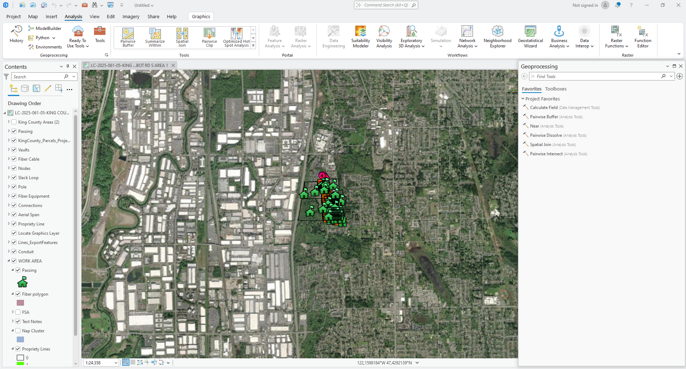
En el panel de Geoprocessing, escriba "Map to KML" en el buscador y elija la herramienta.

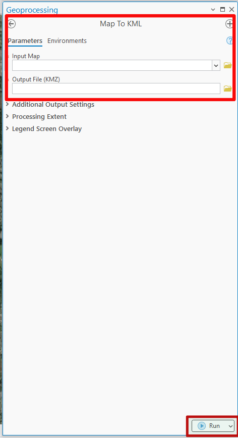
Presione Run para ejecutar la conversión.
Cómo consolidar mapas y datos en un solo archivo para entrega o respaldo.
El archivo .mpkx (Map Package) es un contenedor comprimido que incluye las capas, los datos (GDB/Shapefiles) y la simbología. Es la forma segura de compartir proyectos sin romper los vínculos de datos.
Ve a la pestaña superior Share y en el grupo Package haz clic en Map Package.

En el panel que aparece a la derecha, debes definir dónde se guardará el archivo y completar los metadatos básicos (obligatorios por ArcGIS).
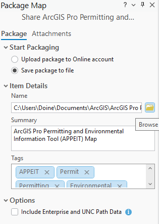
Antes de generar el paquete, el sistema debe verificar que no falte ninguna fuente de datos.
Haz clic en el botón Analyze en la parte superior del panel.
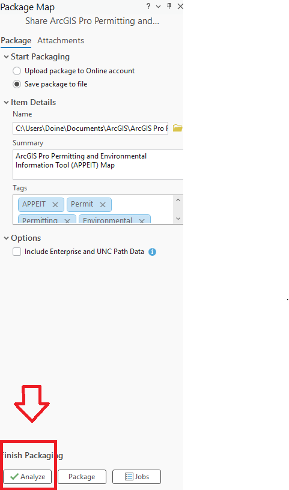
Una vez que el análisis no devuelva errores, el botón de empaquetado se habilitará.
Presiona el botón Package para generar el archivo .mpkx.
Obtendrás un único archivo que puedes enviar por correo. Al abrirlo, el destinatario verá exactamente lo mismo que tú, incluyendo los colores de las líneas y los iconos, sin errores de "capas rotas".
APPEIT es una herramienta creada por la NTIA que funciona dentro de ArcGIS Pro. Su propósito es identificar si tu proyecto de banda ancha cruza zonas protegidas o áreas ambientales antes de la construcción.
.ppkx desde el enlace oficial de la NTIA.
Descargar Archivo
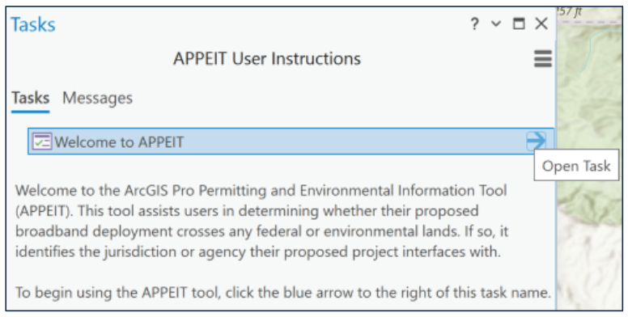
Inicia la tarea y selecciona tu archivo (línea de cable o polígono de área). Haz clic en Run.

Ingresa el Project ID. Si es una línea, define el Buffer.
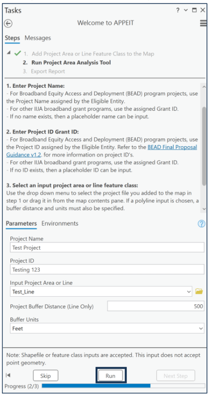
Ejecuta el análisis. Al finalizar, te mostrará la ruta de guardado del CSV.

Selecciona el reporte en "Input Report" y presiona Run.

El documento PDF resultante es un informe detallado que consolida todos los hallazgos geográficos y ambientales. Se divide principalmente en tres secciones:
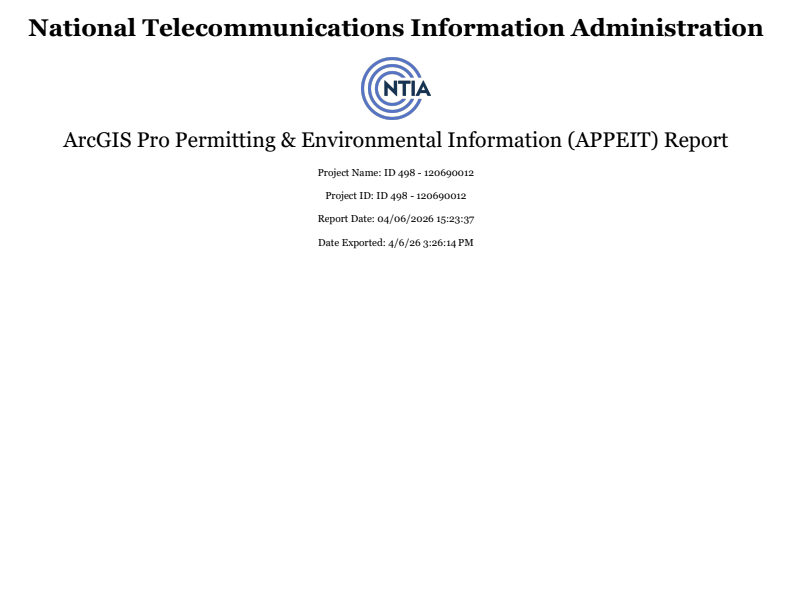
Identificación del Proyecto
Contiene el logo de la NTIA, el nombre oficial del reporte, el Nombre e ID del proyecto analizado y las fechas exactas de ejecución y exportación.

Tabla de Hallazgos
Muestra el listado de capas afectadas organizadas por categorías (EPA, Infraestructura, Humedales). Detalla el nombre del área y los códigos de Recursos relacionados.
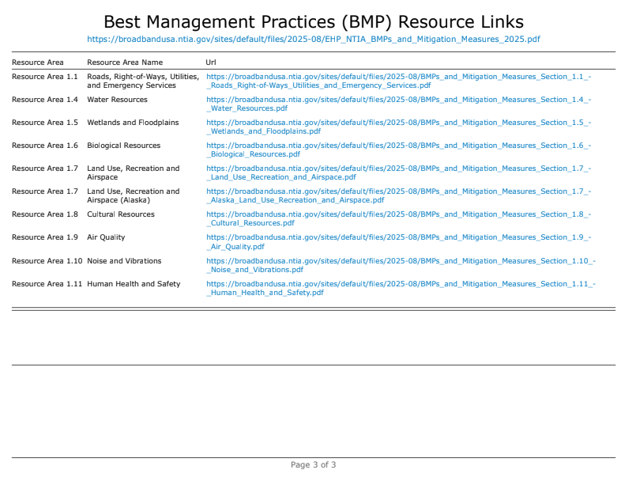
Recursos y Mitigación (BMP)
Proporciona enlaces directos a las Mejores Prácticas de Gestión (BMP) para cada área de recurso afectada (Ej: Recursos Biológicos, Calidad del Aire, Salud Humana).